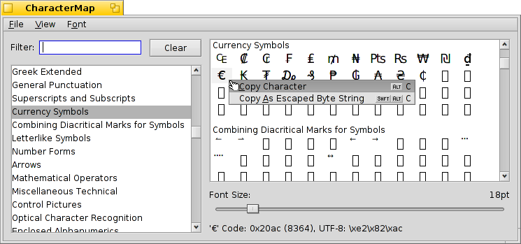

Mapa znaków
Mapa znaków
| Deskbar: | ||
| Ścieżka: | /boot/system/apps/CharacterMap | |
| Ustawienia: | ~/config/settings/CharacterMap settings |
Mapa znaków wyświetla kody UTF-8 każdego znaku obsługiwanego przez dany font.
Po lewej znajduje się lista ustandaryzowanych bloków razem z funkcją filtrowania. Dodatkowo możesz wybrać z menu . Po prawej wyświetlane są znaki zawarte w tych blokach, przy użyciu fontu wybranego w menu. Poniżej można zmienić rozmiar fontu. Na samym dole pokazane są reprezentacje znaku aktualnie znajdującego się pod wskaźnikiem myszy, w notacji szesnastkowej, dziesiętnej i UTF-8.
Możesz przeciągnąć i upuścić znak bezpośrednio z mapy znaków do edytora tekstu, lub kliknąć prawym przyciskiem myszy na jednym z nich, aby otrzymać możliwość (ALT C) i (SHIFT ALT C). Rezultatem tych operacji są, kolejno, np. € oraz \\xe2\\x82\\xac.